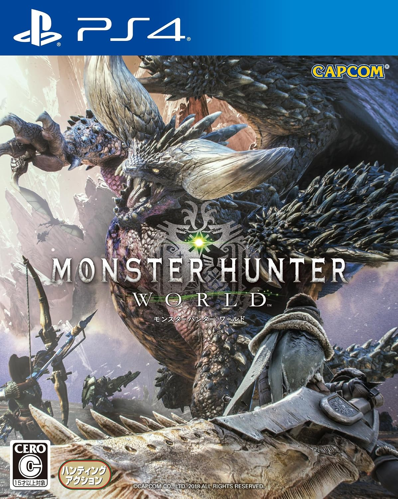
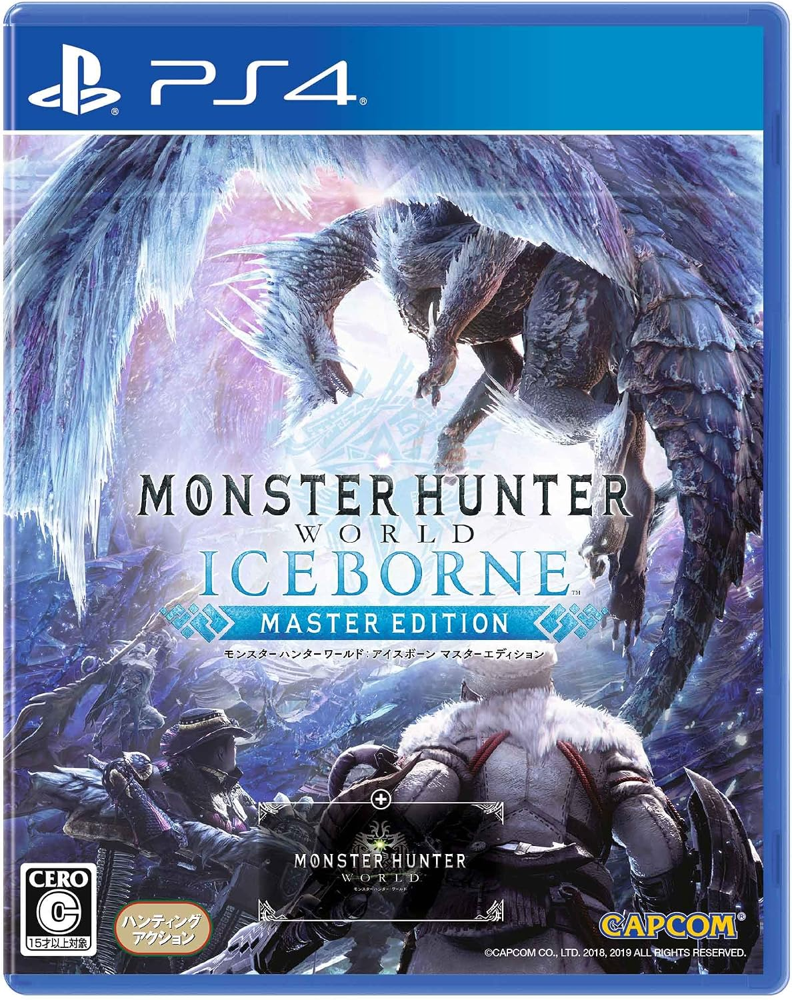
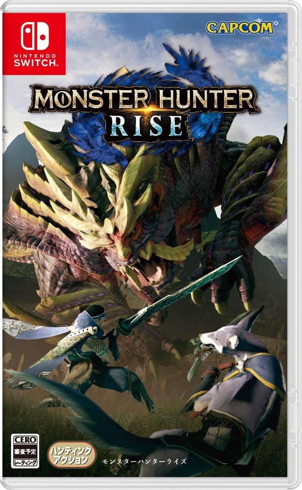
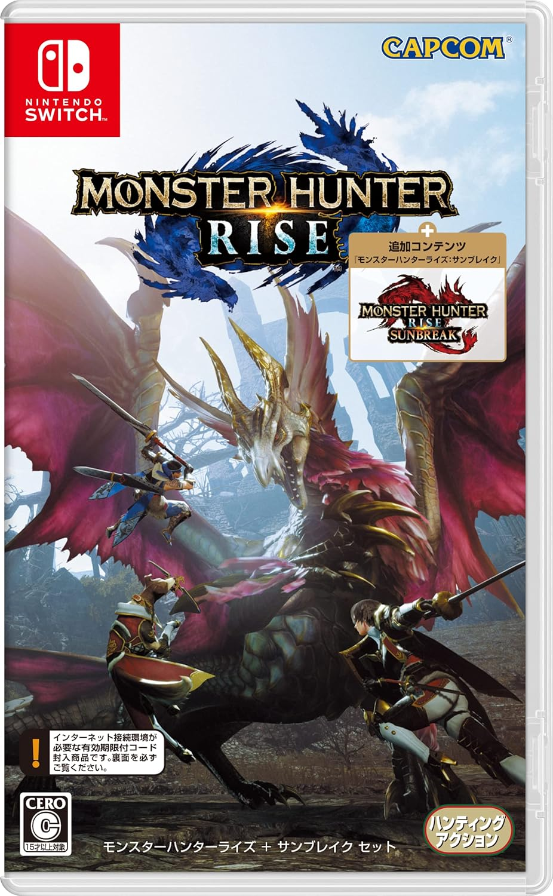
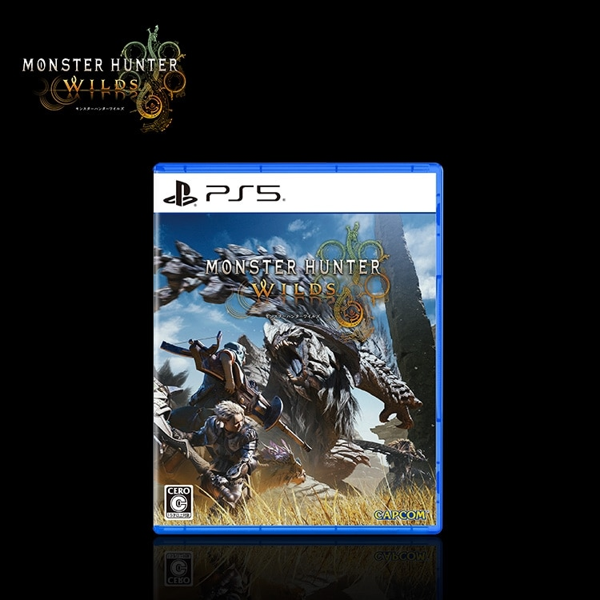
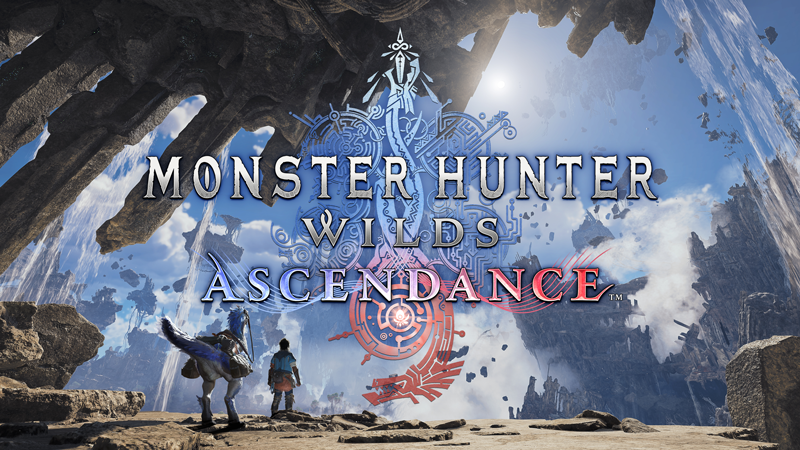

この棚から、次の一歩へ。

WORLDPAST / 記憶
ICEBORNECURRENT / いま
RISEPAST / 記憶
RISE + SUNBREAKPAST / セット版
WILDSNEXT / 次の狩りへ
ASCENDANCEHORIZON / キーアート参考6タイトルの入口。過去作品の詳細は下の歴史館へ。スマートフォンでは棚を横に送れます。
NEXT HUNT
次に向かう、狩りの世界。
次はWildsへ。そして、その先のAscendanceへ。
まだ見ぬ狩りの世界へ。
WILDSASCENDANCE
狩りは、さらに高みへ。
公式映像をめくりながら、次の狩りを思い描く。
いまの手帖とともに、新たな地平へ。
NEXT HORIZON / 2027

メイントレーラー公式映像
YouTubeで見る ↗


HIGHLIGHT注目ポイント発表済み情報だけを見る
PREPARATION準備すること公式更新と遠征前の確認
WEAPONS武器の新情報新たなアクションの続報へ
CURRENT NOTEBOOK狩猟手帖へ現在の狩りへ戻る
OFFICIAL / NEWS
公式更新
FIELD INTELLIGENCE
新たなフロンティアで出会うものたち
新たなロケーション新たな舞台の登場を発表。地名や風景の詳細は続報へ。
追加モンスター追加が発表済み。登場するモンスターの詳細は続報へ。
武器アクション拡張新たなゲームプレイ機能を発表。アクションの詳細は続報へ。
MEMORY / RETURN
狩猟手帖 PICK UP
いまの狩りを持って、次へ。使い慣れた武器の手帖をひらく。これまでの狩りを、歴史館で振り返る。
HUNTING HISTORY
狩りの歴史を、たどる。
過去の作品、ゲーム機、思い出の入口。
作品の詳細は歴史館にまとめました。